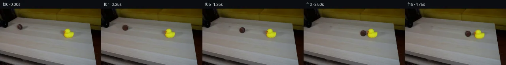
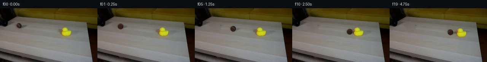
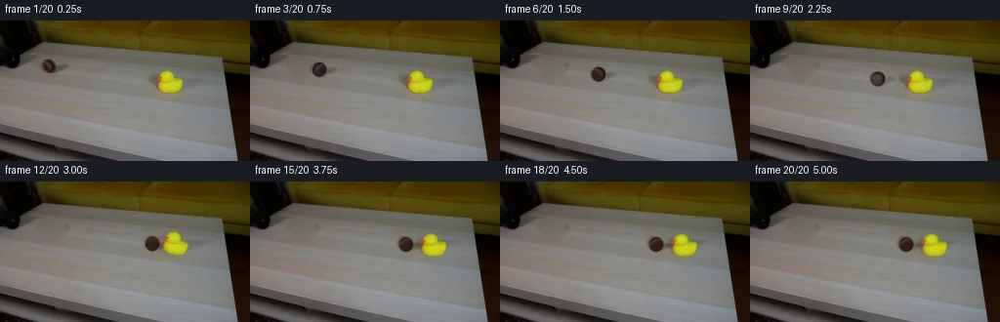
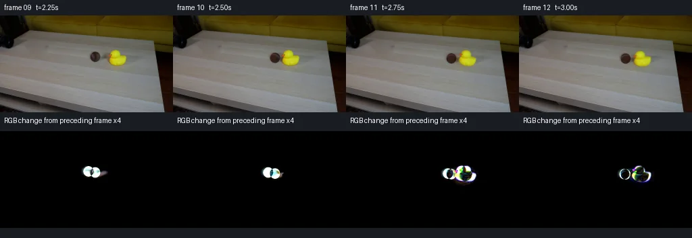

V0 · 初版
2026-11-04T19:41:58.690832+00:00 · RGB 6e95f29964c4
![]()
Observable Generation Trace
把最终像素视频、Harness 冻结的每轮候选、真实工具事件和 Agent 自述放在同一页。可观测证据与模型自述分开标记，避免把“模型说它检查过”误当成真实工具调用。
![首帧]()
Static locked-off single-shot with fixed frame throughout filmed with constant framerate in real-time. The scene shows a realistic scientific demonstration. The scene only contains the described setup and actions. A light beige coffee table with a small yellow rubber duck on it. A mustard yellow couch is in the background. There is a black pipe that points from the left side to the right side of the table. The brown tennis ball rolls straight out of the black pipe and hits the rubber duck.
首帧显示在左侧播放器初始画面。Track 权限、隔离和 tensor 一致性来自 run manifest，而不是 METHOD.md。
默认勾选初版和最终版；可选其他版本一起同步播放。仅检查图更新的连续重复快照已合并，回退旧视频仍保留为一次修订。
Observable events
来源：events.jsonl + run manifest
此 Track 禁止读取输出图片。逐轮预览由外部 Harness 自动冻结，只用于事后审计，生成 Agent 当时看不到这些页面。
Frozen candidates
每张图来自该 round 的真实 00 / 01 / 05 / 10 / 19 帧

pixels 6eeed032a98cfdca · code 2619f9d61763a805
--- previous/generate.py
+++ current/generate.py
@@ -0,0 +1,218 @@
+"""Local source-pixel animation. See METHOD.md for the actual construction."""
+from pathlib import Path
+import json
+import numpy as np
+from PIL import Image, ImageDraw
+from scipy import ndimage, sparse
+from scipy.sparse.linalg import spsolve
+from artifact_io import save
+
+ROOT = Path(__file__).resolve().parent
+SRC = np.asarray(Image.open(ROOT / 'first_frame.png').convert('RGB'), dtype=np.uint8)
+H, W = SRC.shape[:2]
+Y, X = np.mgrid[:H, :W].astype(float)
+F = SRC.astype(float)
+
+
+def harmonic_fill(mask):
+ """Local Dirichlet fill, with nearby source tabletop grain restored."""
+ yy, xx = np.where(mask)
+ index = np.full((H, W), -1, dtype=int)
+ index[yy, xx] = np.arange(len(yy))
+ rr, cc, vv = [], [], []
+ rhs = np.zeros((len(yy), 3))
+ for i, (y, x) in enumerate(zip(yy, xx)):
+ rr.append(i); cc.append(i); vv.append(4.)
+ for dy, dx in ((-1, 0), (1, 0), (0, -1), (0, 1)):
+ sy, sx = y + dy, x + dx
+ j = index[sy, sx]
+ if j >= 0:
+ rr.append(i); cc.append(j); vv.append(-1.)
+ else:
+ rhs[i] += F[sy, sx]
+ matrix = sparse.csr_matrix((vv, (rr, cc)), shape=(len(yy), len(yy)))
+ out = F.copy()
+ out[yy, xx] = spsolve(matrix, rhs)
+ # Source texture comes from the tabletop 30 pixels below each hole.
+ grain = F - ndimage.gaussian_filter(F, (1.3, 1.3, 0))
+ depth = ndimage.distance_transform_edt(mask)
+ out[yy, xx] += grain[np.minimum(yy + 30, H - 1), xx] * np.minimum(depth[yy, xx] / 3., 1.)[:, None] * .65
+ return np.clip(out, 0, 255)
+
+
+def polygon_mask(points, supersample=4):
+ image = Image.new('L', (W * supersample, H * supersample))
+ ImageDraw.Draw(image).polygon([(round(x * supersample), round(y * supersample)) for x, y in points], fill=255)
+ return np.asarray(image.resize((W, H), Image.Resampling.LANCZOS), dtype=float) / 255.
+
+
+# The source ball, contact shadow and duck are the only erased source regions.
+ball_hole = (((X - 51) / 12.) ** 2 + ((Y - 46.5) / 10.) ** 2 < 1) | (((X - 56) / 16.) ** 2 + ((Y - 50) / 7.) ** 2 < 1)
+duck_hole = (((X - 173) / 20.) ** 2 + ((Y - 65) / 16.) ** 2 < 1)
+BASE = harmonic_fill(ball_hole | duck_hole)
+
+# Duck matte includes its bill and eye; exclude the tabletop contact shadow.
+outline = [(168,50.3),(173,50.6),(176,52.4),(178,55.4),(178.4,58.1),
+ (182,58.5),(186,59.7),(187.3,62.7),(187,66),(185.8,68.7),
+ (183.6,71),(181,72.7),(177,73.8),(168,73.8),(165,72.5),
+ (162.5,70),(161,67),(161.5,64.5),(163.4,62.6),(164,61.7),
+ (161,61.4),(159.2,59.5),(160,57.9),(163.1,57.1),
+ (163.8,54.5),(165.2,52.3)]
+outline_alpha = polygon_mask(outline)
+color_alpha = np.clip((BASE[:,:,2] - F[:,:,2]) / np.maximum(BASE[:,:,2] - 24., 1), 0, 1)
+core = (((F[:,:,1]-F[:,:,2])>90) & ((F[:,:,0]-F[:,:,2])>95)) | (((F[:,:,0]-F[:,:,1])>45) & ((F[:,:,0]-F[:,:,2])>95))
+color_alpha[core] = 1.
+DUCK_ALPHA = np.minimum(outline_alpha, color_alpha)
+DUCK_ALPHA[DUCK_ALPHA < .025] = 0
+# Recover premultiplied source foreground, so original antialiasing is retained.
+DUCK_PRE = F - BASE * (1 - DUCK_ALPHA[:,:,None])
+DUCK_PRE *= (DUCK_ALPHA>0)[:,:,None]
+DUCK_PRE = np.clip(DUCK_PRE, 0, 255*DUCK_ALPHA[:,:,None])
+# Extract the diffuse source shadow as a tabletop color residual. Its geometry
+# translates but does not rock along with the rigid duck.
+DUCK_SHADOW = (F - BASE) * duck_hole[:,:,None] * (1 - DUCK_ALPHA[:,:,None])
+DUCK_SHADOW = np.minimum(DUCK_SHADOW, 0)
+DUCK_SHADOW = ndimage.gaussian_filter(DUCK_SHADOW, (.65,.65,0))
+
+BCX, BCY, RX, RY = 50.5, 46.7, 7.4, 7.6
+qx = (X - BCX - .12*(Y-BCY))/RX
+qy = (Y - BCY)/RY
+BALL_ALPHA = np.clip((1-np.sqrt(qx*qx+qy*qy)) * 7.6 + .5, 0, 1)
+BALL_SHADOW = np.minimum((F - BASE) * ball_hole[:,:,None] * (1-BALL_ALPHA[:,:,None]), 0)
+BALL_SHADOW = ndimage.gaussian_filter(BALL_SHADOW, (.55,.55,0))
+
+# Derive a reusable brown texture from the input ball's interior. Camera-space
+# shading is separated from the texture so highlights do not rotate as decals.
+z0 = np.sqrt(np.maximum(0, 1-qx*qx-qy*qy))
+light = np.array([-.32,-.56,.76]); light /= np.linalg.norm(light)
… diff truncated; 131 more lines …
pixels afdeecdbb1914fa6 · code 88abc90e8fa531ee
--- previous/generate.py
+++ current/generate.py
@@ -73,6 +73,10 @@
DUCK_SHADOW = (F - BASE) * duck_hole[:,:,None] * (1 - DUCK_ALPHA[:,:,None])
DUCK_SHADOW = np.minimum(DUCK_SHADOW, 0)
DUCK_SHADOW = ndimage.gaussian_filter(DUCK_SHADOW, (.65,.65,0))
+# Account for the transferred shadow underneath the sprite's fringe.
+DUCK_PRE = F - (BASE + DUCK_SHADOW) * (1 - DUCK_ALPHA[:,:,None])
+DUCK_PRE *= (DUCK_ALPHA>0)[:,:,None]
+DUCK_PRE = np.clip(DUCK_PRE, 0, 255*DUCK_ALPHA[:,:,None])
BCX, BCY, RX, RY = 50.5, 46.7, 7.4, 7.6
qx = (X - BCX - .12*(Y-BCY))/RX
@@ -97,7 +101,7 @@
IN_SPEED = 40.
CONTACT_X = 154.0
CONTACT_T = (CONTACT_X - BCX) / IN_SPEED
-# Elastic impact between a tennis ball and a similarly light rubber duck.
+# Partly inelastic impact between a tennis ball and a similarly light rubber duck.
# Speeds immediately after contact are 10 and 25 pixels/s. Independent sliding
# friction then stops each, preserving positive separation after the collision.
BALL_V, DUCK_V = 10., 25.
@@ -132,7 +136,6 @@
def render(t):
bx,by,dx,dy,angle=state(t)
out=BASE.copy()
- out += sample(BALL_SHADOW,X-(bx-BCX),Y-(by-BCY))
out += sample(DUCK_SHADOW,X-dx,Y-dy)
# Alpha matte transformed about the duck's table-contact pivot.
pivot_x,pivot_y=174.,73.
@@ -143,6 +146,10 @@
da=sample(DUCK_ALPHA,sx,sy)
dp=sample(DUCK_PRE,sx,sy)
out=out*(1-da[:,:,None])+dp
+ # Preserve the entire original duck region exactly until physical contact.
+ if t <= CONTACT_T:
+ out[duck_hole] = F[duck_hole]
+ out += sample(BALL_SHADOW,X-(bx-BCX),Y-(by-BCY)) * (1-da[:,:,None])
# Four spatial subsamples analytically antialias the circular ball edge.
total=np.zeros_like(out)
roll=(bx-BCX)/RX
@@ -203,6 +210,10 @@
assert all(abs(r['ball_y']-BCY-DX_DY*(r['ball_x']-BCX))<1e-9 for r in records)
assert all(r['duck_dx']==0 for r in records if r['time']<CONTACT_T)
assert np.array_equal(frames[17],frames[19])
+# No duck or pipe movement before contact. The far side of the duck is outside
+# the approaching ball's contact-shadow footprint.
+assert np.array_equal(frames[:11,49:75,175:189],np.broadcast_to(SRC[49:75,175:189],(11,26,14,3)))
+assert np.array_equal(frames[:,:,:35],np.broadcast_to(SRC[:,:35],(20,144,35,3)))
changed=np.any(frames!=SRC[None],axis=3)
yy,xx=np.where(changed.any(axis=0))
assert xx.min()>=35 and xx.max()<213 and yy.min()>=34 and yy.max()<86pixels afdeecdbb1914fa6 · code 88abc90e8fa531ee
No generate.py text change in this frozen round.
pixels afdeecdbb1914fa6 · code a6695f5c0b39ec33
--- previous/generate.py
+++ current/generate.py
@@ -1,6 +1,8 @@
"""Local source-pixel animation. See METHOD.md for the actual construction."""
from pathlib import Path
import json
+import base64
+import re
import numpy as np
from PIL import Image, ImageDraw
from scipy import ndimage, sparse
@@ -198,6 +200,18 @@
sheet.save(ROOT/'transition_check.png')
(ROOT/'motion.json').write_text(json.dumps(dict(contact_time=CONTACT_T,states=records),indent=2)+'\n')
+# Decode the standalone player's packets and compare every displayed frame.
+html=(ROOT/'index.html').read_text()
+player_data=json.loads(re.search(r'const DATA=(.*?);\nfunction unpack',html,re.S).group(1))
+player_frames=[np.frombuffer(base64.b64decode(player_data['first']),dtype='<u4').copy()]
+for packet in player_data['deltas']:
+ patch=np.frombuffer(base64.b64decode(packet),dtype='<u4')
+ current=player_frames[-1].copy(); cursor=0
+ while cursor<len(patch):
+ start,count=map(int,patch[cursor:cursor+2]); cursor+=2
+ current[start:start+count]=patch[cursor:cursor+count]; cursor+=count
+ player_frames.append(current)
+
# Required exact artifact verification, plus bounded-motion numerical checks.
packed=np.load(ROOT/'pixels.npz')['pixels']
assert packed.dtype==np.uint32 and packed.shape==(144,256,20)
@@ -206,6 +220,8 @@
png=np.asarray(Image.open(ROOT/'frames'/f'{i:02d}.png').convert('RGB'),dtype=np.uint32)
value=(png[:,:,0]<<16)|(png[:,:,1]<<8)|png[:,:,2]
assert np.array_equal(value,packed[:,:,i]),i
+ assert np.array_equal(value.reshape(-1),player_frames[i]),i
+ assert Image.open(ROOT/'frames'/f'{i:02d}.png').mode=='RGB'
assert all(records[i+1]['ball_x']>=records[i]['ball_x'] for i in range(19))
assert all(abs(r['ball_y']-BCY-DX_DY*(r['ball_x']-BCX))<1e-9 for r in records)
assert all(r['duck_dx']==0 for r in records if r['time']<CONTACT_T)
@@ -218,7 +234,8 @@
yy,xx=np.where(changed.any(axis=0))
assert xx.min()>=35 and xx.max()<213 and yy.min()>=34 and yy.max()<86
report=dict(frame_count=20,shape=list(frames.shape),fps=4,duration_seconds=5,
- exact_first_frame=True,all_pngs_match_tensor=True,tensor_shape=list(packed.shape),
+ exact_first_frame=True,all_pngs_match_tensor=True,all_player_frames_match_tensor=True,
+ fixed_pipe_verified=True,duck_stationary_before_impact_verified=True,tensor_shape=list(packed.shape),
tensor_dtype=str(packed.dtype),changed_bounds=[int(xx.min()),int(yy.min()),int(xx.max()),int(yy.max())],
contact_time=CONTACT_T,final_ball_center=[records[-1]['ball_x'],records[-1]['ball_y']],
final_duck_displacement=[records[-1]['duck_dx'],records[-1]['duck_dy']],Final visual checks
Harness 保存的最终产物


Agent claims
以下文字由生成 Agent 撰写，不等同于工具证据
The input is a 256 × 144 RGB image. Inspection used Pillow/NumPy RGB samples, luminance bins, and connected components; no image viewing tool was used. Coordinates below are in source pixels, x rightward and y downward.
20 frames at 4 fps; source frame 00 is unmodified. Times use t = frame index / 4. Ball radius and static camera stay constant. Motion is continuous and sampled in real time.
| Frame | Time, s | Event |
|---|---|---|
| 00 | 0.00 | Exact source image; ball center (50.5, 46.7), duck at rest. |
| 01 | 0.25 | Ball rolls right from the pipe, approximately x 60. |
| 02 | 0.50 | Ball at x 70, subtle surface texture rotation. |
| 03 | 0.75 | Ball at x 80, contact shadow follows. |
| 04 | 1.00 | Ball at x 90 on the same straight surface path. |
| 05 | 1.25 | Ball at x 100, duck stationary. |
| 06 | 1.50 | Ball at x 110. |
| 07 | 1.75 | Ball at x 120. |
| 08 | 2.00 | Ball at x 130, nearing duck. |
| 09 | 2.25 | Ball at x 140. |
| 10 | 2.50 | Ball at x 150; just before contact. |
| 11 | 2.75 | Impact: ball near x 156; duck begins moving right and tilts clockwise about its base. |
| 12 | 3.00 | Duck slides and reaches peak brief tilt; ball follows more slowly. |
| 13 | 3.25 | Duck continues a short slide and rocks toward upright. |
| 14 | 3.50 | Duck damps its wobble; both objects lose speed from table friction. |
| 15 | 3.75 | Duck almost settled; ball nearly stops behind it. |
| 16 | 4.00 | Ball and duck at rest, with a small final separation. |
| 17 | 4.25 | Fixed camera hold on the resulting positions. |
| 18 | 4.50 | Settled scene holds. |
| 19 | 4.75 | Final stable scene. |
Use local pixel operations only: reconstruct narrowly masked original moving-object regions from adjacent tabletop pixels; extract the source duck as an antialiased textured sprite; render the ball with measured dark-brown source texture, analytic spherical shading and rolling texture coordinates; transform the duck with base-anchored damped rocking and a short friction-limited slide. Preserve source pixels outside the union of moving-object footprints. Use subpixel sampling and modest motion blur during movement. Output all required artifacts, compare every PNG to the packed uint32 tensor, and numerically check first-frame identity, trajectory, impact, settling, and modified-pixel bounds. Inspection sheets are saved but not visually reviewed.
The sequence is a local, deterministic continuation of the supplied RGB image. It uses Python, NumPy, Pillow, and SciPy pixel operations, source texture extraction, and analytic motion. No network, external references, external model, simulation engine, image Read/View tool, or subagent was used. Source understanding and output checks were numeric. The saved contact sheets have not been visually reviewed.
OBSERVATION.md was written before the generator. The input was measured by RGB point samples, luminance-bin tables, and a connected component of the duck material. Frame 00 is copied directly from the decoded source RGB array.
The only reconstructed source regions are two narrowly bounded masks containing the original ball and its shadow, and the duck and its shadow. Their tabletop background is approximated by a sparse Dirichlet/Laplace solve using the source boundary pixels. A small amount of high-frequency grain copied from source tabletop pixels 30 rows below restores local surface variation. This cannot recover the actual hidden tabletop; it is a local pixel estimate.
The duck is extracted from the original image with a hand measured silhouette, a blue-channel material matte, and saturated yellow/orange interior pixels. Its orange bill and dark eye are retained from the source. Premultiplied RGB is used for interpolation. Its shadow and surrounding dim reflection are transferred as a soft source color residual. The shadow translates on the tabletop independently of the duck rotation. Before contact, the original duck region is restored directly, ensuring it remains stationary. The approaching ball shadow can fall on the nearby tabletop.
The ball uses a sphere with radii 7.4 × 7.6 source pixels and brown texture measured from the original ball interior. A simple camera-space normal/light term is factored out of the source color and reapplied during rendering. Texture rotates by traveled distance divided by radius. Because there is only one input view, the unseen rear surface reuses the measured texture through a mirrored hemispherical projection. This is an approximation rather than newly observed texture. Four spatial subsamples antialias the sphere. Three temporal samples over a 1/80-second exposure add a small amount of motion blur. Texture assets and affine transforms use bilinear sampling.
The fixed camera and pipe retain their source pixels. The ball begins at (50.5, 46.7) and advances 40 screen pixels per second along the straight projected table path y = 46.7 + 0.159 × (x − 50.5). Contact occurs at 2.5875 seconds, when its center reaches x = 154 and its right edge meets the duck body near x = 161.4.
After a partly inelastic collision, the ball advances at an initial 10 pixels/s and the duck at 25 pixels/s. Positive constant friction accelerations of 9 and 21 pixels/s² respectively reduce those speeds to zero. These speeds are consistent with a duck mass about 1.2 times the ball mass and an impact restitution about 0.375 in the one-dimensional translation model. Rotation is an imposed damped impulse response, not a rigid-body solver: 0.40 × exp(−3.6τ) × sin(7.7τ) radians about the duck base. It peaks briefly clockwise and returns through a smaller opposite tilt. The sampled tilt is about 12.1 degrees at frame 11. Both objects settle by the final hold. The duck moves approximately (14.881, 2.366) pixels; the final ball center is (159.556, 64.040).
The implementation slightly refines the preliminary event table: the largest sampled duck tilt is frame 11, the ball stops by frame 15, and the exact settled hold begins at frame 17. Time sampling is t = frame index / 4, spanning 0–4.75 seconds; each of the twenty frames displays for 0.25 seconds, giving a five-second sequence.
Run python generate.py from this workspace to reproduce all generated pixels and artifacts. artifact_io.py only serializes the generated frame array and creates the player/contact sheet; it does not generate the scene.
pixels.npz: key pixels, uint32 array shaped (144, 256, 20), values packed as 0xRRGGBB.frames/00.png through frames/19.png: twenty 256 × 144 RGB images.inspection.png: eight representative frames in a contact sheet.transition_check.png: frames 09–12 and four-times amplified absolute RGB changes.index.html: standalone player with all frame data embedded, 4-fps playback, seeking, replay, and looping.motion.json: sampled positions and duck angles.verification.json: exact artifact comparisons and numerical transition checks.The generator asserts source-frame RGB identity, all twenty PNG-to-tensor matches, and equality of all twenty reconstructed player frames to the tensor. It also checks RGB image mode, tensor dimensions/dtype, the straight monotonic ball path, absence of duck motion before contact, unchanged pipe pixels, bounded modified-pixel coordinates, and exact equality of the final held frames. Modified pixels are limited to x 40–207 and y 37–83. No visual review is claimed, and physical/rendering realism has only been assessed through these numeric checks.